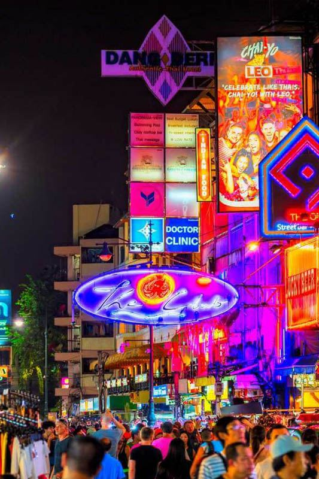
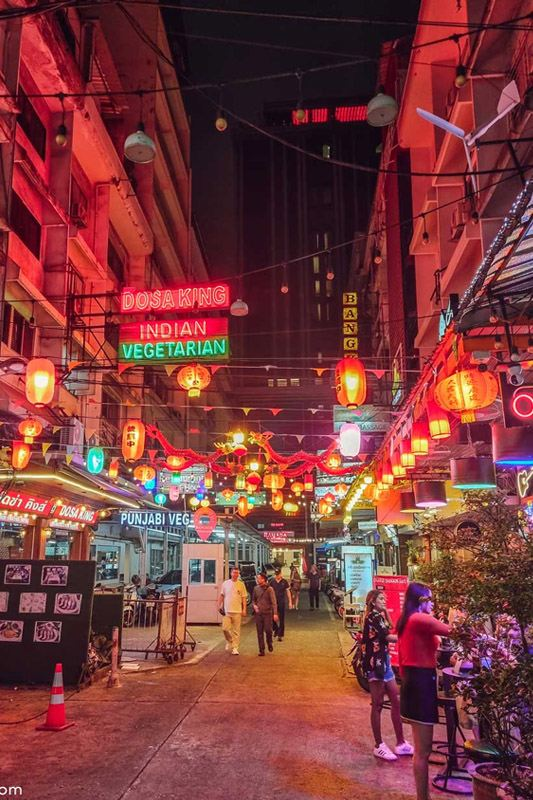

Bangkok Night Markets represent the authentic heart of Thai street culture, where locals gather every evening to enjoy incredible street food, browse unique shopping, and experience the vibrant social atmosphere that defines Bangkok after dark. These evening markets offer visitors genuine Thai experiences away from tourist areas, with budget-friendly prices and cultural immersion impossible to find elsewhere.
What makes Bangkok night markets extraordinary is their authentic local character and incredible variety. From the vintage-themed Train Night Market Ratchada to the massive Chatuchak Weekend Night Market, each venue offers distinct atmospheres, specialized vendors, and regional food specialties. These markets showcase Thai entrepreneurial spirit and social culture in its most genuine form.
For Royal Ivory Hotel guests, Bangkok's night markets provide perfect evening entertainment combining cultural exploration, incredible street food, and budget-friendly shopping. Whether you're seeking authentic Thai cuisine, unique souvenirs, or simply want to experience how Bangkokians unwind after work, these markets offer unforgettable evenings full of discovery and delicious food.
Bangkok's night markets each offer unique personalities, specialties, and atmospheres. Understanding the character of different markets helps choose destinations that match your interests and create memorable evening experiences.
| Market | Specialties | Transport from Royal Ivory | Best For |
|---|---|---|---|
| 🚂 Train Night Market Ratchada | Vintage theme, 1,500 stalls, live music | MRT Blue Line to Lat Phrao (30 min) | Instagram photos, vintage shopping |
| 🏪 Chatuchak Weekend Night | Massive selection, weekend only | BTS to Mo Chit (25 min) | Comprehensive shopping, variety |
| 🏘️ Huai Khwang Night Market | Local atmosphere, authentic food | MRT Blue Line to Huai Khwang (20 min) | Authentic local experience |
| 🌆 Wang Thonglang Night Market | Community market, local prices | MRT Yellow Line access | Budget shopping, local culture |

Train Night Market Ratchada has become Bangkok's most famous night market, renowned for its unique vintage train container design and incredibly photogenic atmosphere. The market's colorful containers create a striking visual experience that's made it a social media sensation while maintaining authentic Thai market culture.
MRT Route (Recommended): Walk to BTS Nana (2 min) → BTS to Asok → Transfer to MRT Blue Line → Lat Phrao station → 5-minute walk to market. Total journey: 30-35 minutes, Cost: 95 Baht.
Peak photo times: Arrive around sunset (18:00-19:00) for best lighting
Signature shots: Elevated walkway provides perfect overview photos
Food specialties: Try famous grilled seafood and vintage-themed desserts
Shopping focus: Vintage clothing, retro accessories, handmade crafts
Bangkok night markets serve as outdoor restaurants where locals dine daily, offering the most authentic and affordable Thai cuisine in the city. Each market features regional specialties and signature dishes that provide comprehensive Thai culinary education.
🍜 Smart Street Food Strategy:
Follow the crowds: Popular stalls with locals indicate quality and freshness
Point and smile: Language barriers easily overcome with pointing and gestures
Spice levels: Indicate "not spicy" (mai phet) or "little spicy" (phet nit noi)
Payment: Small bills (20, 50, 100 Baht) make transactions easier
Seating: Shared plastic tables and stools are standard and social
Beyond food, Bangkok night markets offer incredible shopping opportunities with unique items, handmade crafts, vintage finds, and contemporary fashion at prices impossible to find in regular retail stores.
| Category | Items Available | Price Range | Bargaining |
|---|---|---|---|
| 👕 Fashion | T-shirts, dresses, accessories | 100-500 Baht | Expected and encouraged |
| 🎨 Handicrafts | Art, home decor, unique items | 200-800 Baht | Moderate negotiation |
| 📱 Electronics | Phone cases, gadgets, accessories | 50-300 Baht | Some flexibility |
| 🎁 Souvenirs | Thai-themed gifts, keepsakes | 100-400 Baht | Standard bargaining |
| 👜 Vintage Items | Retro clothing, collectibles | 150-1,000 Baht | Depends on rarity |
Bangkok night markets are well-connected to Royal Ivory Hotel via public transportation, with most markets accessible within 20-35 minutes using BTS and MRT systems. Understanding route options helps plan efficient evening market adventures.
🚇 Royal Ivory Transport Strategy:
Early arrival: Leave hotel around 17:30-18:00 to arrive as markets open
Return planning: Last BTS/MRT trains run until midnight
Backup options: Taxi/Grab available but more expensive during peak hours
Group travel: Share transport costs when visiting markets with friends
Successful night market experiences require understanding Thai social customs and market culture. Following local etiquette ensures positive interactions and authentic cultural experiences.
🗺️ Successful Market Strategy:
Survey first: Walk through entire market before buying to compare options
Language help: Download translation apps or bring hotel business card
Storage planning: Bring shopping bags for purchases
Hygiene: Hand sanitizer useful, most vendors maintain good cleanliness
Photography: Ask permission before photographing vendors or food preparation
Top Bangkok night markets include Train Night Market Ratchada (vintage theme, 1,500 stalls), Chatuchak Weekend Night Market (Fridays-Sundays), Huai Khwang Night Market (local atmosphere), Wang Thonglang Night Market, and various neighborhood markets. Each offers unique atmosphere, street food, and shopping experiences.
Most Bangkok night markets operate 17:00-24:00 (5 PM - midnight) daily. Some markets like Chatuchak Weekend Night Market operate Friday-Sunday only. Peak hours are 19:00-22:00 when markets are most active with full vendor participation and entertainment.
Access varies by market: Train Night Market Ratchada via MRT Blue Line to Lat Phrao (30 minutes), Chatuchak via BTS to Mo Chit (25 minutes), Huai Khwang via MRT Blue Line (20 minutes). Most markets accessible via Bangkok's public transport system from Royal Ivory Hotel location.
Night markets offer diverse street food (50-200 Baht): pad thai, som tam, grilled seafood, desserts, fresh juices. Shopping includes clothing, accessories, handicrafts, vintage items, electronics, souvenirs (100-800 Baht). Each market has unique specialties and local character.
Yes, Bangkok night markets are generally very safe for tourists. They're popular with locals and families, well-lit, and have security presence. Standard precautions apply: watch belongings, avoid excessive displays of cash, and stay in main market areas. Food safety is generally excellent at popular stalls.
Bangkok night markets offer far more than shopping and dining - they provide authentic cultural immersion, social experiences, and insights into Thai urban life that create lasting memories and genuine cultural understanding.
Multi-market exploration: Visit different markets on different nights for variety
Combination evenings: Start with shopping, end with street food dinner
Cultural immersion: Arrive early (17:00) to see market setup and local life
Social experience: Share tables with locals, practice Thai phrases
Photography journey: Document authentic Thai culture and social life